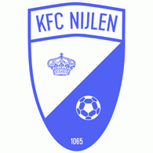

In mijn vrije tijd houd ik me graag bezig met verschillende hobby's en interesses. Veel daarvan hebben te maken met sport, computers en entertainment. Een van mijn grootste hobby's is voetbal. Ik vind het leuk om zelf voetbal te spelen, maar ook om wedstrijden te volgen en bezig te zijn met de sport. Het competitieve aspect en het samenwerken met anderen maken voetbal voor mij extra interessant. Bij voetbal moet je niet alleen goed kunnen spelen, maar ook goed kunnen samenwerken met je ploeggenoten. Iedereen heeft een bepaalde rol binnen het team en samen probeer je het beste resultaat te behalen.
Ik speel momenteel voor de reservenploeg van KFC Nijlen. Ik voetbal nu al ongeveer 16 jaar, waardoor voetbal een groot deel van mijn leven is. Ik ben eigenlijk al op jonge leeftijd begonnen met voetballen en sindsdien ben ik er altijd mee bezig gebleven. Door de jaren heen heb ik verschillende ervaringen opgedaan en heb ik ook veel nieuwe mensen leren kennen via voetbal. Ik vind het leuk dat je tijdens trainingen en wedstrijden steeds beter kunt worden. Wanneer je merkt dat je iets beter kunt dan vroeger, geeft dat een goed gevoel. Ook de wedstrijden zelf vind ik leuk, vooral wanneer we als team goed spelen en uiteindelijk winnen.

Daarnaast speel ik graag videogames. Ik vind het leuk om verschillende soorten games uit te proberen en mezelf uit te dagen. Videogames zijn voor mij een goede manier om te ontspannen en mijn vrije tijd door te brengen. Er zijn veel verschillende soorten games, waardoor er altijd wel iets nieuws te ontdekken is. Sommige games speel ik vooral voor de ontspanning, terwijl andere games juist veel concentratie en oefening vragen.
Wat ik ook leuk vind aan videogames, is dat sommige games je de mogelijkheid geven om samen met vrienden te spelen. Hierdoor is gamen niet alleen iets wat je alleen doet, maar kan het ook een sociale activiteit zijn. Je kunt samen een doel proberen te bereiken, tegen elkaar spelen of gewoon plezier maken. Vooral wanneer je samen met vrienden speelt en er iets grappigs gebeurt in het spel, kan dat voor veel plezier zorgen.
Naast mijn hobby's heb ik ook interesse in programmeren. Ik vind het interessant om te ontdekken hoe programma's en technologie werken en om zelf dingen te maken met code. Programmeren lijkt mij interessant omdat je met een paar regels code iets kunt maken dat uiteindelijk echt werkt. Het is soms moeilijk om een probleem op te lossen, maar juist daarom vind ik het interessant.
Ik vind het vooral leuk wanneer ik een probleem kan oplossen door logisch na te denken en te programmeren. Soms werkt iets niet meteen en moet je uitzoeken waar de fout zit. Dat kan soms frustrerend zijn, maar wanneer je uiteindelijk de oplossing vindt, geeft dat veel voldoening. Ik zou mij in de toekomst ook graag verder willen verdiepen in programmeren, omdat technologie steeds belangrijker wordt in onze samenleving. Er zijn bovendien veel verschillende richtingen binnen programmeren, waardoor er altijd nieuwe dingen zijn om te leren.
Verder kijk ik graag naar tv-series en films. Ik vind het interessant om verschillende verhalen en personages te ontdekken en kan me gemakkelijk verliezen in een goede serie of film. Ik vind het vooral leuk wanneer een verhaal goed is opgebouwd en je benieuwd blijft naar wat er in de volgende aflevering of scène gaat gebeuren.
Films en series zijn voor mij ook een goede manier om te ontspannen. Na een drukke dag kan ik bijvoorbeeld gewoon een film of een paar afleveringen van een serie kijken. Ik vind het leuk dat er zoveel verschillende genres bestaan. Daardoor kan ik afhankelijk van mijn stemming iets anders kijken. Soms heb ik zin in een spannende film, terwijl ik op een ander moment liever iets grappigs of avontuurlijks kijk. Ik vind het ook interessant om te zien hoe verschillende personages zich ontwikkelen gedurende een verhaal.
Ten laatste ga ik ook elk jaar één of twee keer skiën met mijn familie. Ik doe dit al ongeveer 16 jaar en het is ondertussen een van mijn favoriete vakantieactiviteiten geworden. Omdat ik al op jonge leeftijd ben begonnen met skiën, ben ik het ondertussen goed gewend en vind ik het leuk om telkens opnieuw op de piste te staan.
Wat ik zo leuk vind aan skiën, is de combinatie van sport, snelheid en het buiten zijn in de bergen. Het is ook een activiteit die ik samen met mijn familie kan doen. We kunnen samen de pistes afgaan en ondertussen genieten van het uitzicht en de omgeving. Daarnaast is het leuk om steeds betere pistes te kunnen doen en je eigen vaardigheden te verbeteren.
Voor mij is skiën daarom niet alleen een sport, maar ook een moment om tijd door te brengen met mijn familie en even weg te zijn van het dagelijkse leven. Ik kijk er elk jaar opnieuw naar uit om op vakantie te gaan en weer op de latten te staan.
Over het algemeen zijn mijn hobby's en interesses dus behoorlijk gevarieerd. Voetbal en skiën zorgen ervoor dat ik actief bezig ben, terwijl videogames, programmeren, tv-series en films mij op andere manieren bezighouden. Ik vind het fijn om verschillende dingen te doen en mij zowel met sport als met technologie en entertainment bezig te houden. Deze hobby's zijn een belangrijk onderdeel van mijn vrije tijd en zorgen ervoor dat ik altijd wel iets heb om mij mee bezig te houden.
| Hobbies | Interesses |
|---|---|
| Voetbal | Programmeren |
| Videogames | tv-series en films |
| Sporten |